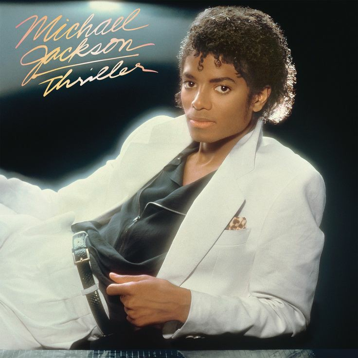

Trayectoria musical
Comenzó su carrera artística a mediados de los años 1960 en la agrupación musical The Jackson 5, en la cual publicó, junto con algunos de sus hermanos, diez álbumes hasta 1975. En 1971, inició su carrera como solista, aunque siguió perteneciendo al grupo. A principios de la década de 1980, Jackson se convirtió en una figura dominante en la música popular. Sus vídeos musicales, entre los que se destacan «Beat It», «Billie Jean» y «Thriller», de su álbum de 1982 Thriller, son acreditados como una ruptura de las barreras raciales y la transformación del medio en una forma de arte y herramienta promocional. La popularidad de estos ayudó a llevar a la cadena televisiva MTV a la fama.
Album más reconocido

- Wanna Be Startin' Somethin
- Baby Be Mine
- The Girl Is Mine» (con Paul McCartney)
- Thriller
- Beat It
- Billie Jean
- Human Nature
- P.Y.T. (Pretty Young Thing)
- The Lady in My Life